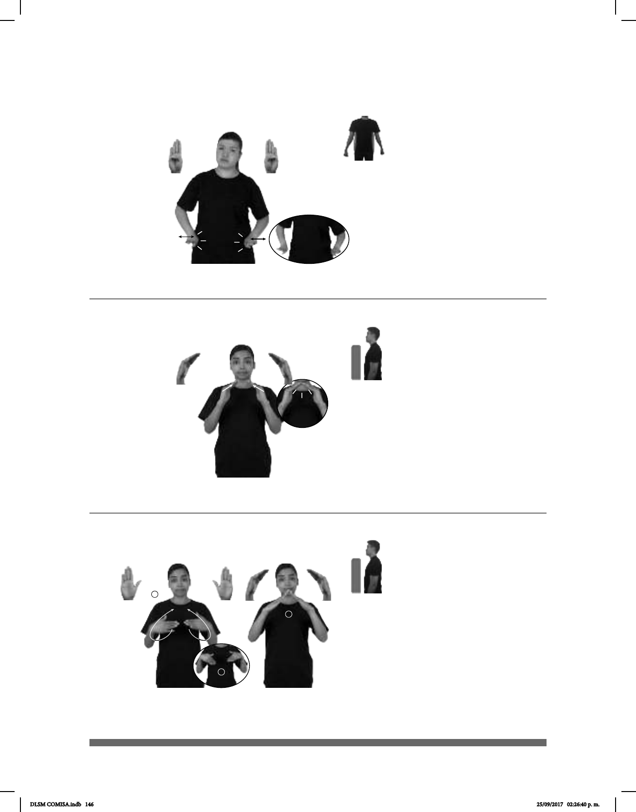

146
Seña: SS
Seña que cambia
de B-P.2 a B-P.12
Las palmas inician
hacia abajo y terminan oblicuas
hacia el centro y hacia abajo.
A la altura del pecho.
Las muñecas se
mueven formando un círculo y
después las puntas de los dedos se
encuentran y chocan repetidamente.
destinada para ser habitada.
(B-P 108)
pos-MI #TÍO TENER CASA CUERNAVACA
allá
Mi tío tiene una casa en Cuernavaca.
(B-P 106)
dm-JOSÉ pos-SU CARÁCTER FUERTE pro-ÉL
José es de carácter fuerte.
Seña: SS
B-P.1
Palmas hacia abajo.
Sobre la cadera a am-
bos lados.
Las manos simulan
varios saltos.
Cabeza
ladeada.
sust. m. Personalidad,
idiosincrasia; modo de ser de las
personas.
Seña: SS
B-P.12
Palmas oblicuas
hacia el centro y hacia abajo.
A la altura del pecho.
Las puntas de los
dedos se encuentran y chocan
repetidamente.
Simula la
estructura del techo de una casa.
destinada para ser habitada.
(B-P 107)
pro-MI CASA NORMAL HUMILDE
Mi casa es humilde.
DLSM COMISA.indb 146 25/09/2017 02:26:40 p. m.